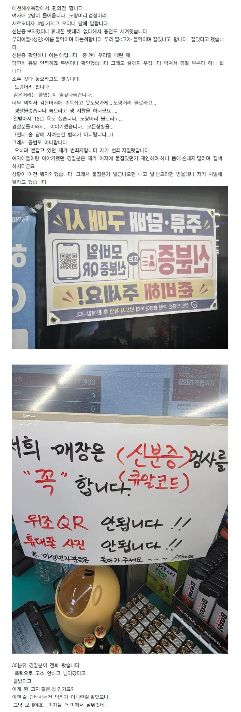

대천해수욕장에서 편의점 합니다
댓글
귀엣말 사건이라고 그거 명예훼손죄 성립 안됨
뭔 개 ㅂㅅ같은 어휴
시민들에게 공권력 행사를 위임받은 경찰들도 애매하거나 잘 모르는 분야면 함부로 물리력 사용 안함
그리고 설령 그런 상황에서 경찰들이 물리력 사용했다가 공론화 되면 시민들이 경찰편을 들어주는 사회 분위기도 아님
이런 면에서 보면 법을 잘 모르는 업주가 학생에게 물리력을 사용한건 무리수로 보여짐
개인적으로 편의점 업주면 미성년자 술담배 구매가 범죄가 아니다 이정도는 알고 있었어야함
그리고 신분증 관련 범죄는 워낙에 케바케라 일도양단적으로 그자리에서 판단할 문제가 아님
모든 직업인은 자신의 직업 관련된 법령에 대해 어느정도는 알아야함
이걸 몰라봐야 법률의 부지 그 이상도 이하도 아님
모든 사건사고는 내 눈앞에 있는 경찰탓 하는게 세상에서 가장 쉬운 해결방법임
그래서 저 경찰들은 특별히 잘못한것도 없는데 앞으로 경찰을 혐오하고 증오하는 시민이 +1된거고
어 우리집도 욕장에서 지에스하는데 어디지
경찰 태도가 저따위면 민원으로 응수해줘야됨
저건 신분증 위조로 조져야지
공문서부정행사
저러고 팔면 점주가 손해보니까 그렇지 ㅋㅋ
저번에 그래서 그런가 대천해수욕장 근처 어떤 편의점은 아예 담배 안 파신다더라
사려는건 범죄가 아닌데 사면 판놈이 범죄임 ㄷㄷ;;
그냥 너 중2때 같은학교학생 괴롭힌 누구누구아니냐 하면 명예훼손이냐?